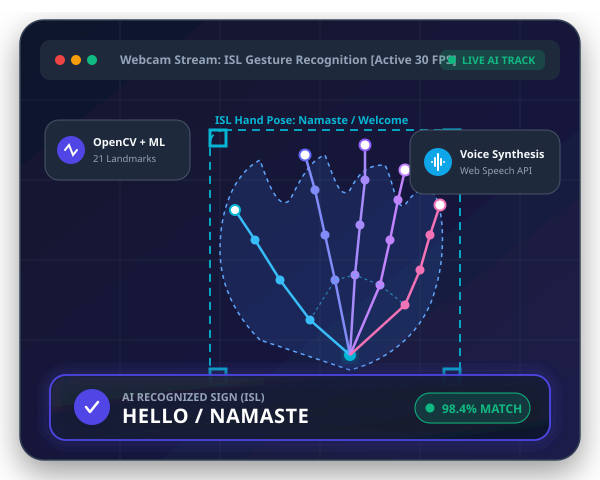

Learn Indian Sign Language, practice gestures with real-time camera feedback, and communicate effortlessly with the power of Artificial Intelligence.

Sign language is a complete, natural language with its own rich grammar and syntax. Yet, over 63 million deaf and hard-of-hearing individuals in India often face immense communication barriers in classrooms, workplaces, and public spaces.
SignConnect AI is an accessible educational and assistive platform designed to democratize Indian Sign Language (ISL) learning and provide real-time bilateral communication tools powered by computer vision and browser-native speech synthesis.
Inclusive UX optimized for all learners and communicators.
21-landmark hand tracking architecture with OpenCV.
Unlike American Sign Language (ASL) which is predominantly one-handed for fingerspelling, Indian Sign Language (ISL) employs extensive two-handed alphabet structures and indigenous cultural idioms. SignConnect AI is carefully curated around verified ISL standards to prevent linguistic confusion.
| Feature | Indian Sign Language (ISL) | SignConnect AI Implementation |
|---|---|---|
| Alphabets (A-Z) | Primarily two-handed coordination | Two-handed visual vectors |
| Grammar Structure | Topic-Comment word order | Contextual token breakdown |
| Speech Bridge | Requires interpreter assistance | Integrated Web Speech TTS |
Explore 6 integrated modules engineered for effortless learning, camera-guided practice, and real-time speech translation.
Explore an extensive curriculum of ISL alphabets (A-Z), numbers (0-9), and essential everyday phrases with verified visual demonstrations and step-by-step hand positioning guides.
Browse CurriculumCamera-based interactive studio designed to capture user hand gestures through computer vision landmarks, providing instant feedback on alignment accuracy.
Open Practice StudioConverts classified hand signs continuously into structured textual words and sentences, enabling deaf individuals to express thoughts effortlessly to hearing peers.
Launch CommunicatorInstant voice output utilizing the browser-native Web Speech API. Speaks compiled sentences with natural Indian English cadence for accessible spoken dialogue.
Test Voice OutputType or paste English phrases to generate animated sequential sign demonstrations, complete with token breakdowns and finger-spelling fallbacks for unsupported words.
Try ConverterGamified quizzes featuring real sign identification, multiple choice challenges, instant answer feedback, Chart.js analytics, and achievement milestone badges.
Take a QuizFrom physical hand gesture to audible vocal output in milliseconds.
The user gestures in front of their laptop or smartphone webcam under standard lighting.
OpenCV & MediaPipe extract 21 coordinates per hand for deep learning gesture classification.
The classified sign is decoded into clean textual tokens and assembled into structured sentences.
The browser Web Speech API synthesizes the text into clear audible speech for hearing listeners.